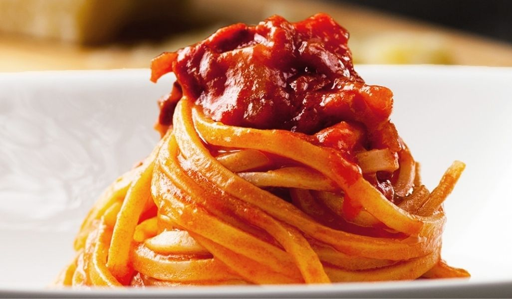

Amatriciana

Description
This recipe for amatriciana makes a delicious, easy dish that includes guanciale, or dried pork, passata, and spaghetti!
It originates from the town of Amatrice, in the Lazio region of Italy, and certains deviations in this Roman cuisine call for the use of garlic, onions,
and different types of pasta.
I've tried to make the recipe as authentic as possible but it also includes some substitutions if you can't get a hold of all the ingredients.
Don't worry if you haven't got everything, there's lots of way you can make this without sacrificing too much of the original recipe.
I personally love this dish because it's so easy to make and allows you to have a tasty meal without spending hours at the stove.
This is one of my favourite dishes, and I hope it becomes one of yours!
Ingredients
Serves 4 people
- Spaghetti - 320g
- Passata - 750g
- Guanciale - 150g (Pancetta can be substituted)
- Grated Pecorino Romano - 75g (Parmigiano/parmesan can be substituted)
- White wine - 50g
- Olive oil for drizzling
- Crushed chillies
- Salt
Method
- To prepare the amatriciana, first boil the water for cooking the pasta, add salt and then bring to a boil, cooking until al dente (chewy but not hard)
- In the meantime, take the guanciale, remove the rind and cut it into slices of about 1 cm thick; cut the slices into strips of about half a cm.
- Brown the guanciale over low heat for 7-8 minutes in an iron or steel pan. The fat in the guanciale should become transparent and the meat should be crispy.
- Stir often, being careful not to burn it. When the fat has melted, blend with the white wine, raise the heat and let it evaporate.
- Transfer the strips of guanciale to a plate and set aside, then grate the Pecorino Romano.
- In the same pan with the cooking juices of the guanciale, place the crushed chillies and the passata. Cook the sauce over a medium heat for about 10 minutes and season with salt to taste.
- Add the strips of guanciale and mix to combine.
- Drain the spaghetti and pour it into the pan with the sauce.
- Sauté the pasta very quickly to mix it well with the sauce (if you like the pasta al dente you can turn off the heat otherwise pour in a little of the pasta cooking water to continue cooking)
- Finally, sprinkle with grated Pecorino Romano.
- Your amatriciana is ready!